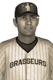

|
|
|  | T.J. Andrews Nabs Prestigious Pitcher of the Year Award Wednesday, October 14th, 1925 The 1925 National League Pitcher of the Year Award has gone to Juneau Brasseurs ace T.J. Andrews after a stellar 16-11 season. In 25 starts he piled up 222.1 innings, 88 strikeouts, 47 walks and a 3.04 ERA. Andrews held opposing hitters to a .268 batting average. He received 8 first place votes out of a possible 16. Caleb Boisvert of the Chicagou Frontenacs finished second in voting with 7 first place votes, while Kitsada Richardson of the Minnesota Saints finished third with 1 first place vote. Player - Team - First Place - Total Points T.J. Andrews - Juneau Brasseurs - 8 - 85 Caleb Boisvert - Chicagou Frontenacs - 7 - 78 Kitsada Richardson - Minnesota Saints - 1 - 55 Mark Detraz - St. Louis Cardinaux - 0 - 20 Pairote Blakey - Minnesota Saints - 0 - 19 Taye Browning - Minnesota Saints - 0 - 7 Punkorn McKinzie - Detroit Lions - 0 - 4 Hakim Semple - Minnesota Saints - 0 - 4 |   |